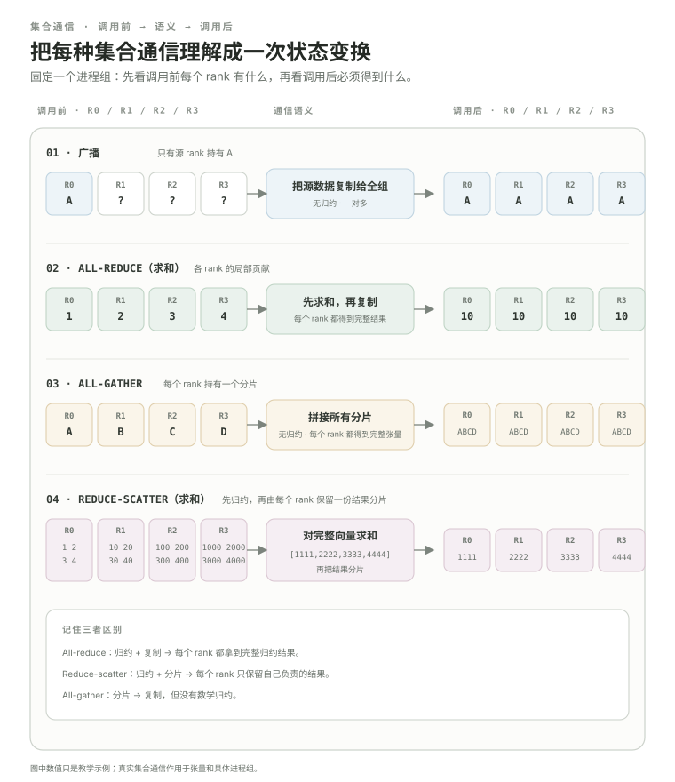

Collectives：每张 GPU 开始有什么，结束又得到什么？
all-reduce、all-gather、reduce-scatter 这些名字很像，背定义特别容易混。我们只用一个方法学：固定 4 个 ranks，画出通信前每个 rank 手里的 tensor，再画通信后每个 rank 得到什么。只要这个状态变化看懂，Megatron 里大部分 collective 名字就不再神秘。
- 不用背英文定义，直接画出 broadcast、all-reduce、all-gather、reduce-scatter 的输入/输出。
- 区分“聚合数值”“收集 shards”“分发结果”这几种不同语义。
- 解释 Data Parallel 为什么常用 all-reduce / reduce-scatter 处理 gradients。
- 解释 Tensor Parallel 为什么经常需要 gather / reduce 一类通信。
- 理解 Mixture of Experts (MoE，混合专家模型) token dispatch 为什么天然会遇到 all-to-all。
- 知道 collective 是 group-level contract：参与 ranks、调用顺序、tensor 元信息不匹配都可能造成错误或 hang。
不要先背 API 名字。固定 process group，然后看 before → contract → after。
下面把四个最常用 collective 放进同一张画布。你会看到：名字看似相近，本质只是不同的 ownership/state transformation。

一个 rank 有数据，把同一份数据发给所有 ranks。
[A][?][?][?][A][A][A][A]注意 broadcast 没有“求和”这一步，它只是从一个 source 复制/传播。典型直觉是某个 rank 先拥有配置、随机种子或 tensor，其它参与 ranks 最后都拿到同一份。
每个 rank 都有一份贡献：先 reduce，再让所有 rank 都拿到完整聚合结果。
[1][2][3][4][10][10][10][10]Reduce 表示按某个 op 聚合，例如 SUM、MAX；all-reduce 的关键是聚合后的完整结果最后出现在所有参与 ranks 上。
Data Parallel 的经典场景：各 rank 看不同 mini-batch，backward 得到不同 gradients；对应 gradients 必须聚合，模型副本才能继续做数学上一致的更新。
每个 rank 只有一个 shard，最后所有 rank 都拿到完整拼接结果。
[A][B][C][D]这里没有 reduce；只是把各 rank 的 shard 收集并按约定排列成完整数据。以后 Tensor Parallel / Sequence Parallel 中，经常会遇到“某个维度当前被 shard，但下一步需要完整 tensor”的情况。
先 reduce，但最后每人只留一个结果 shard。
用一个能看见“不同输出 shard”的例子。四个 ranks 分别持有：
[1,2,3,4][10,20,30,40][100,200,300,400][1000,2000,3000,4000][1111][2222][3333][4444]完整逐元素 SUM 是 [1111,2222,3333,4444]，但 reduce-scatter 不要求每个 rank 保存整条结果：每个 rank 只拿自己的 reduced shard。这个语义正适合“最终本来就只需要每 rank 一部分”的场景。
把 all-reduce 从数据状态角度拆开，会更容易理解现代分布式训练。
local contributionsreduced shardsfull reduced tensor从数学数据状态看，一个 all-reduce 的最终效果可以理解为先得到 reduced shards，再让所有 ranks gather 完整 reduced tensor。这不是说 NVIDIA Collective Communications Library (NCCL，NVIDIA 集体通信库) 内部永远机械地调用两个独立 Application Programming Interface (API，应用程序编程接口)；它只是非常有用的语义分解，能帮助理解 Zero Redundancy Optimizer (ZeRO，零冗余优化器) / Fully Sharded Data Parallel (FSDP，全分片数据并行) / Megatron 的 sharded states。
每个 rank 都要把不同的一部分发给不同 peers。
A0 A1 A2 A3B0 B1 B2 B3C0 C1 C2 C3D0 D1 D2 D3↔ ↔ ↔
A0 B0 C0 D0A1 B1 C1 D1A2 B2 C2 D2A3 B3 C3 D3它更像一次 destination-dependent reshuffle：每个 sender 给不同 destination 不同数据。MoE 的 Expert Parallel 是自然例子——router 决定 token 去哪个 expert，于是 token 要跨 ranks dispatch，再把 expert outputs 发回来。
Point-to-point：明确的 sender 和 receiver。
send / recv 不是“整个 group 一起变换 tensor”，而是某些 ranks 直接点对点传数据。Pipeline Parallel 相邻 stages 之间传 activations / gradients 时，就很容易出现 Peer-to-Peer (P2P，点对点通信) 语义。
所以后面 Megatron 的不同 parallelism 会对应不同通信模式：TP 经常是 collectives，PP 很多时候更像相邻 stage 的 P2P。
四个进程，每人一个数字，亲手把它们求和。
import os
import torch
import torch.distributed as dist
local_rank = int(os.environ["LOCAL_RANK"])
torch.cuda.set_device(local_rank)
dist.init_process_group("nccl")
rank = dist.get_rank()
world = dist.get_world_size()
x = torch.tensor([rank + 1.], device=f"cuda:{local_rank}")
dist.all_reduce(x, op=dist.ReduceOp.SUM)
print(f"rank={rank}, sum={x.item()}")
# world=4 时，每个 rank 都打印 sum=10
x /= world
print(f"rank={rank}, mean={x.item()}")
# 每个 rank 都得到 2.5
dist.destroy_process_group()torchrun --standalone --nproc-per-node=4 05_all_reduce.py注意：all_reduce(SUM) 是求和，不会自动除以 world size。Distributed Data Parallel (DDP，分布式数据并行) 梯度同步里的具体 averaging 行为由 DDP 的实现语义处理，不应该把“all-reduce API 本身”记成“自动求平均”。
现在把几个 primitive 放回真实系统。
这里的“在哪见”是建立路线感，不表示每个框架在所有配置下都固定使用唯一一种 collective。Megatron 会根据 parallel mode、Sequence Parallel、dispatcher 和 overlap 策略组合不同通信操作。
同一个 collective，tensor 越大、group 越大、拓扑越差，代价通常越值得担心。
真正通信量并不等于简单“tensor 大小 × peers”。下一课学 NCCL、ring/tree、NVLink/Peripheral Component Interconnect Express (PCIe，高速外设组件互连)/InfiniBand 时，我们再追 collective 怎样映射到真实链路。
参与者必须对“现在要做什么通信”有一致理解。
rank 0 进入 all-reduce，rank 1 却进入 all-gather；某些 ranks 根本没进入 collective；process group 不一致；tensor shape / count 不满足 API 要求。结果可能是 runtime error，也可能表现成一直等待。
所以 debugging 分布式代码时，一个有效方法是为每个 rank 打印collective 序号、group、shape、dtype，先确认所有 peers 对通信协议的理解一致。
别背名字，直接画输入和输出。
本课出现的缩写与术语
第一次在正文使用时采用 English Full Name (ABBR，中文名)；这里集中复习，避免学习时来回跳总站 Glossary。
| 缩写 | English full name | 中文名 | 本课怎么理解 |
|---|---|---|---|
GPU | Graphics Processing Unit | 图形处理器 | 大模型训练与推理中执行 GEMM、Attention 等高并行计算的主要设备。 |
MoE | Mixture of Experts | 混合专家模型 | 由 router 为 token 选择少数 experts 的稀疏模型结构。 |
API | Application Programming Interface | 应用程序编程接口 | 软件组件之间约定的调用接口；源码阅读时先看 contract，再看实现。 |
TP | Tensor Parallel | 张量并行 | 把单层内部的大矩阵/计算沿张量维度分到多个 ranks。 |
DP | Data Parallel | 数据并行 | 不同 replica 处理不同数据，再同步训练状态；它主要切数据而不是切单层模型。 |
PP | Pipeline Parallel | 流水线并行 | 沿模型深度切成多个 pipeline stages，并用 microbatch 流水。 |
NCCL | NVIDIA Collective Communications Library | NVIDIA 集体通信库 | GPU 集群中常用的 collective / P2P 通信软件库。 |
ZeRO | Zero Redundancy Optimizer | 零冗余优化器 | 通过数据并行 ranks 分片优化器状态、梯度或参数来减少训练状态冗余的一类方法。 |
FSDP | Fully Sharded Data Parallel | 全分片数据并行 | 在数据并行域进一步分片参数、梯度或优化器状态的训练方式。 |
P2P | Peer-to-Peer | 点对点通信 | 两个 peer/rank 之间直接发送和接收数据的通信模式。 |
DDP | Distributed Data Parallel | 分布式数据并行 | PyTorch 常用的数据并行训练方式，每个 rank 通常持有模型副本并同步梯度。 |
AI | Artificial Intelligence | 人工智能 | 本课程讨论的大模型训练、推理与系统基础设施所服务的计算领域。 |
PCIe | Peripheral Component Interconnect Express | 高速外设组件互连 | CPU、GPU、NIC 等设备之间常见的主机互连总线。 |